Full Ellipse
Toolbar / Icon:


Menu: Draw - Ellipse - Full Ellipse
Shortcut: E, P
Commands: ellipse | ep
Description:
Draws ellipses with a given center, major axis and minor axis.
Procedure:
- Set the center of the ellipse using the mouse or enter a coordinate in
the command line.
- Define the major axis by clicking the endpoint of the axis, which is a
point on the ellipse. You can also enter a coordinate into the command line
or enter an angle and major radius in the format
@50<30 where 50 is the major radius and 30 is the ellipse
angle.
- Define the endpoint of the minor axis which is also a point on the
ellipse.